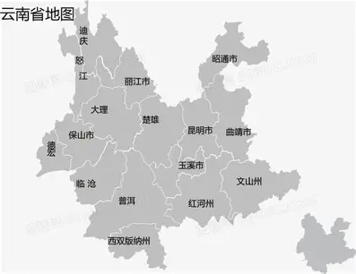
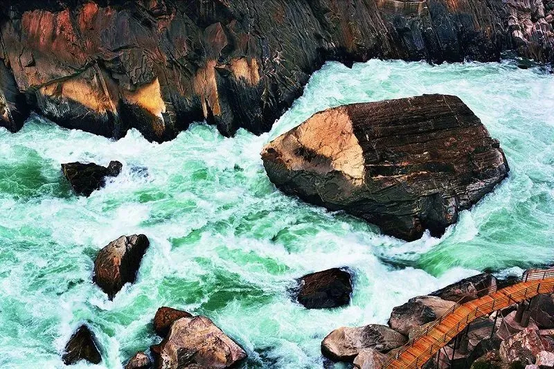
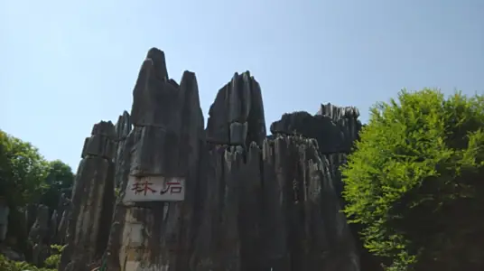
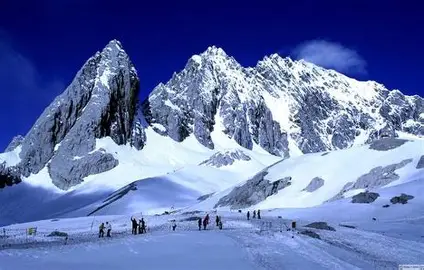

第一站：云南省
基本信息

虎跳峡景区
位于云南省迪庆藏族自治州香格里拉市虎跳峡镇，是世界上最深的峡谷之一、中国最美十大峡谷之，2009年被评定为国家AAAA级旅游景区，以雄，奇、险、峻的自然景观闻名，核心特色包括3900多米的垂直高差、分段式峡谷地貌和世界级徒步路线。位置与概况：虎跳峡地处金沙江上游，南岸为玉龙雪山（海拔5596米），北岸为哈巴雪山（海拔5396米)，峡谷全长约17-23千米，江面最窄处仅20余米，因传说猛虎可跃石过江得名。景区属温带和寒温带季风气候，年平均气温4.7℃一16.5℃，全年开放。峡谷分为三段，各具特色：上虎跳：交通最便捷，设施完善，标志性景观为江心虎跳石（高约13米），江水冲击巨石激起巨浪，适合快速游览。中虎跳：核心徒步区，礁石林立，江流湍急，险滩密布，以“惊、奇、险”著称，含28道拐、HALFWAY观景台等景点。下虎跳：地势平缓，视野开阔，可远眺雪山，历史上为茶马古道要津，兼具自然与人文景观。

云南石林国家地质公园
位于云南省路南彝族自治县，距昆明86公里，是1984年国务院批准的首批国家级重点风景名胜区。该公园以岩溶地质地貌为上要特征，总占地面积400平方公里,在2001年3月成为首批国家地质公园，2024年11月与自贡世界地质公园缔结为姊妹公园。晚古生代时期，该域为滨海-浅海环境，沉积了石灰岩、白云岩，经地壳抬升及水溶蚀作用形成多期次石林地貌，最早一期可追溯至2.5亿年前的早二叠世晚期。园内分布乃古石林、大小石林等片区，涵盖剑状、刃脊状、蘑菇状及塔状喀斯特形态，与洞穴、湖泊、瀑布构成喀斯特地貌全景。彝族撒尼人在此聚居两千余年，《阿诗玛》史诗、火把节等民族文化与石林景观相融合。石林风景区由：二林、二洞、二湖、一瀑7个自然景区组成，即大小石林、乃古石林、芝去洞奇风洞、长湖、月湖、大叠水瀑布。石林地质公园的岩溶地貌景观根据其发育的程度、组合形态等，可以分化出落水洞、溶斗、溶沟、石柱、石笋、石芽、孤峰、峰林和峰从等等，对岩溶地貌的研究具有重要的科学价值。石林地质公园遍布岩溶峰林群，奇石拔地而起、千姿百态巧夺天工，被誉为“天下第一奇观”。在地质学上石林称为岩溶地貌，也称喀斯特地貌，主要是由于石灰岩受水侵蚀、风化面形成据考证，路南地区在距今27亿年的晚古生代为滨海-浅海环境，沉积了大量石灰岩，后来，由于地壳运动，使石灰岩层抬升露出海面，在海水、雨水、地下水等的溶蚀、冲刷和风化下，形成了如此大规模的岩溶地质地貌。石林分布面积达三万公顷（四十余万亩），向游人开放面积八十公顷（约一千二百亩）。相对成片的有乃古石林、大小石林、豆黑村、阿玉林、尾博邑等10多片。

玉龙雪山
玉龙雪山位于云南省丽江市玉龙纳西族自治县境内，它地处东经 100°4′2″~100°16′30″、北纬 27°3′2″~27°18′57″之间，东邻香格里拉市，西接古城区和宁蒗彝族自治县，恰好处于青藏高原与云贵高原的交接地带，是青藏高原一级阶梯向云贵高原二级阶梯过渡的关键区域，属于滇西大地槽的一部分。玉龙雪山由十三峰组成，全长75千米，海拔在5000米以上的山峰超过10座，最高峰为海拔5596米的扇子陡。山体主要由石灰岩与玄武岩构成，因黑白分明，又被称为“黑白雪山”。气候是塑造玉龙雪山风貌的另一大“功臣”。这里主要受西南季风影响，气候呈现出明显的垂直差异。山脚下的丽江盆地属于南温带型气候，四季温度舒缓，年平均温度12.6℃，即使是夏季最热的时候，平均温度也低于18℃，冬季最冷月平均温度也有5.9℃，这样宜人的气候，让丽江成为了四季皆宜的旅游胜地。而随着海拔的升高，气温逐渐降低，到了雪线附近（海拔4800~5000米)，年平均气温已经降到了-3.3℃-4.7℃，年降水量却达到了1500-2000毫米，充足的降水为冰川的形成和发育提供了有利条件。说到玉龙雪山的自然景观，最让人震撼的莫过于它的冰川。这里分布着19条现代冰川，其中东坡有15条，西坡有4条，总面积达到11.6平方千米。除了壮丽的冰川，玉龙雪山的高山湖泊也同样令人着迷，其中最具代表性的就是蓝月谷。玉龙雪山的神奇之处还在于它独特的垂直生态带。从海拔2900米的甘海子草甸开始，一直到海拔5596米的雪线，这里分布着9个不同的垂直生态带，从干热河谷稀树灌从到亚热带常绿阔叶林，再到高山草甸、高山流石滩植被，每一个生态带都有着独特的动植物资源，堪称座“天然的生物基因库”。据统计，玉龙雪山地区拥有超过2815种种子植物，472种脊椎动物，其中不乏滇金丝猴、雪豹、玉龙蕨、喜马拉雅红豆杉等珍稀物种。1988年，玉龙雪山被列为国家级风景名胜区；2007年，它被评为国家首批5A级旅游景区；2009年，玉龙雪山国家地质公园正式成立：2024年9月，在众多世界级名山的竞争中，玉龙雪山成功入选“首批世界旅游名山”。
